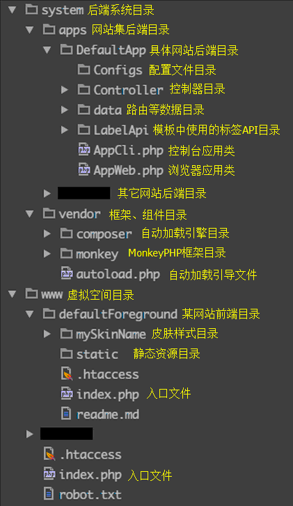

1.3 目录结构

www 为你的 web 服务器的虚拟目录，里面只包含静态资源文件和上传文件，并将目录权限设置为不可执行。
system 不在虚拟目录内，并置于浏览器访问不了的位置。
图中DefaultApp是一个应用目录，并且DefaultApp也是这个应用的顶级命名空间
图中defaultForeground目录名是随便起的，里面的入口文件和外面的入口文件差不多：
前端目录内的入口文件
//启动自动加载
require(__DIR__.'/../../system/vendor/autoload.php');
//建立应用,参数1：应用命名空间；参数2：前端目录。
$app= \Monkey\Monkey::createApp('DefaultApp',strtr(__DIR__,DIRECTORY_SEPARATOR,'/'));
//运行应用
$app->run();
前端目录外的入口文件
//启动自动加载
require(__DIR__.'/../system/vendor/autoload.php');
//建立应用, 参数1：应用命名空间； 参数2：前端目录。
$app= \Monkey\Monkey::createApp('DefaultApp',strtr(__DIR__,DIRECTORY_SEPARATOR,'/').'/defaultForeground');
//运行应用
$app->run();